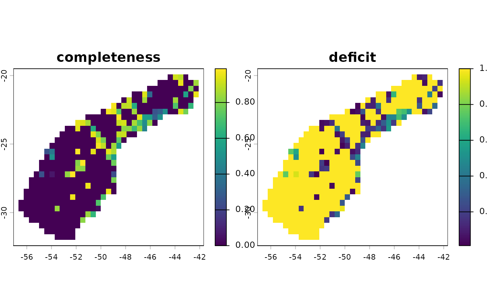

Estimation of inventory completeness and coverage deficit
Source:R/inventory_completeness.R
inventory_completeness.RdEstimates expected species richness, sample coverage (inventory completeness), and coverage deficit for spatial units based on the framework proposed by Chao & Jost (2012).
Usage
inventory_completeness(
occ,
species = "species",
long = "decimalLongitude",
lat = "decimalLatitude",
raster_base,
minimum_species = 3,
maximum_expected = "equal_obs",
remove_NA = TRUE,
fill_NA = TRUE,
return = c("completeness", "deficit")
)Arguments
- occ
(data.frame or data.table) a data frame containing the occurrence records. Must contain columns for species, longitude, and latitude.
- species
(character) the name of the column in occ that contains the species names Default is "species".
- long
(character) the name of the column in occ that contains the longitude values. Default is "decimalLongitude".
- lat
(character) the name of the column in occ that contains the latitude values. Default is "decimalLatitude".
- raster_base
(SpatRaster) a reference raster used to aggregate records into spatial units.
- minimum_species
(numeric) the minimum number of species required in a cell to calculate completeness and deficit. If the number of observed species is lower than this threshold, the function sets completeness = 0 and deficit = 1. Default is 3.
- maximum_expected
(numeric or character) The upper limit for the estimated species richness (s_exp). Options include:
"equal_obs": Limits s_exp to the maximum observed richness (sefault).
"double_obs": Limits s_exp to twice the maximum observed richness found across all cells.
"triple_obs": Limits s_exp to three times the maximum observed richness global.
"free": No limit is applied to the Chao1 estimator.
numeric: A fixed integer defining the maximum number of species allowed for any cell.
This prevents mathematically inflated estimates in cells with extremely low sampling coverage.
- remove_NA
(logical) whether to remove sampling units in raster_base where values are NA.
- fill_NA
(logical) if TRUE (default), cells within the
raster_basewithout occurrence records are assigned completeness = 0 and deficit = 1. If FALSE, these cells remain NA.- return
(character) metrics to return.. Available options are "n", "s_obs", "s_exp", "singletons", "doubletons", "completeness" and "deficit". See details.
Details
The function calculates metrics based on the frequency of rare species
(singletons and doubletons) within each cell of the raster_base.
n: Total number of records.
s_obs: Observed species richness (number of sampled species).
s_exp: Estimated asymptotic species richness based on the Chao1 estimator.
singletons: Species represented by exactly one record.
doubletons: Species represented by exactly two records.
completeness: Sample coverage, representing the proportion of the total individuals in
occthat belong to the species in the sample.deficit: Coverage deficit, which is the probability that the next sampled individual represents a previously unsampled species (1 - completeness)
References
Chao A, Jost L (2012) Coverage-based rarefaction and extrapolation: standardizing samples by completeness rather than size. Ecology 93:2533–2547. https://doi.org/10.1890/11-1952.1
Examples
# Load example of raster variables
data("worldclim", package = "RuHere")
r <- terra::unwrap(worldclim)
# Aggregate cells
r_base <- terra::aggregate(r, 5)
# Import data set of amphibian communities from the Atlantic Forest
data("atlantic_amphibians", package = "RuHere")
# Run analysis
res <- inventory_completeness(occ = atlantic_amphibians, raster_base = r_base)
terra::plot(res)
